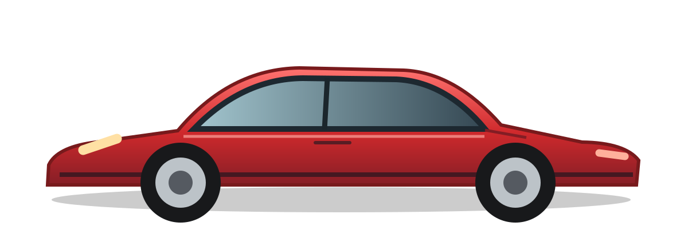

1963–1973
The original 911
The 911 debuted as the 901 and introduced the classic rear-engine, flat-six formula.
From a new sports car introduced in 1963 to one of the most recognizable performance cars in the world.

The Porsche 911 was first shown at the Frankfurt Motor Show in 1963 as the Porsche 901. Before it reached customers, the name was changed to 911. Created to succeed the Porsche 356, the new car had a rear-mounted, air-cooled, six-cylinder engine. Its sloping roofline, round headlights, and distinctive shape helped establish a design that Porsche continues to use today.
Over more than six decades, the Porsche 911 has changed considerably. New generations brought stronger engines, improved safety, better handling, and modern technology. One of its biggest changes came with the 996 generation in the late 1990s, when Porsche replaced air cooling with water cooling. Despite these updates, the car has continued to be known for combining sports-car performance with everyday usability.
The 911 debuted as the 901 and introduced the classic rear-engine, flat-six formula.
Revised bumpers and the arrival of the 911 Turbo made this era especially memorable.
All-wheel drive became available along with more modern comfort and safety features.
The last air-cooled generation is an important milestone for Porsche enthusiasts.
The first water-cooled 911 marked a major mechanical change.
Classic round headlights returned, with advances in performance and handling.
A longer wheelbase and updated construction helped improve comfort and dynamics.
The eighth generation adds modern driver assistance and increasingly advanced powertrains.
Read Porsche's official history to explore the cars, their engineering, and what changed through each generation.
Porsche Official History ↗Visit Q2: Bad Website ReviewVisit Extra Credit PageInformation source: Porsche Newsroom, “60 years of the Porsche 911.” Car graphic is an original SVG illustration created for this school project.